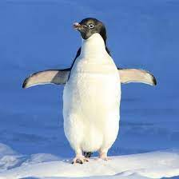

ANIMALES FANTASTICOS
Animales Terrestres
En biología, se habla de animales terrestres para referirse a aquellos animales que hacen su vida preferente o enteramente sobre la tierra, es decir, en la superficie continental del planeta, a diferencia de los animales acuáticos, que habitan mayormente en el agua. Los animales terrestres se encuentran física y orgánicamente adaptados a la vida lejos del agua.
Elefante
El elefante (Loxodonta africana). Originario de África y la India, este mamífero cuadrúpedo de enorme tamaño y dieta vegetariana es célebre por su larga trompa con la que puede recoger objetos e incluso bañarse en pozos de agua. Muchas civilizaciones antiguas los usaron como tanques de guerra vivientes.
León
El león (Panthera leo). El mayor carnívoro felino del planeta y el rey de la Sabana africana, este enorme animal de pelaje amarillento es un depredador nato que se halla en peligro de extinción. Los machos poseen una melena oscura característica.
Jirafa
La jirafa (Giraffa camelopardalis). Conocida por su llamativo pelaje amarillo con manchas marrones geométricas, y por su largo cuello que le permite comer las hojas más altas de los árboles, este animal africano de cuatro patas es uno de los más exóticos conocidos por la humanidad.
Oso Panda
Oso panda (Ailuropoda melanoleuca). Uno de los osos de pelaje más curioso del mundo: blanco y negro, y de dieta casi exclusiva a bambú, es quizá el más famoso animal asiático en vías de extinción. Suelen ser lentos, dormilones y cómodos, y pesan entre 70 y 100 kilogramos.
Dragón de Komodo
Dragón de Komodo (Varanus komodoensis). Este enorme reptil nativo de Indonesia puede medir más de dos metros de longitud y pesar casi 90 kilos, posee una mordedura peligrosísima, dado que posee una enorme cantidad de bacterias en la boca.
Avestruz
Avestruz (Struthio camelus). Ave corredora de gran tamaño, nativa de África y algunas regiones de Oriente Medio, que es capaz de alcanzar los 70 kmph en una carrera. Posee pequeñas alas que no sirven para volar, y un cuello largo y sin plumas.
Animales Acuáticos
Los animales acuáticos son aquellos animales que viven todo el tiempo o gran parte de su vida dentro del agua, sea dulce o salada. Pueden respirar el oxígeno disuelto en el agua (a través de las branquias o de la piel) o lo pueden respirar del aire (a través de los pulmones).
Almeja
Es un molusco de tipo bivalvo que está protegido por un caparazón, vive enterrado en la arena o el barro y puede soportar temperaturas de hasta 5°C. Es uno de los animales de mayor longevidad: puede vivir hasta 200 años.
Calamar
Es un molusco de aguas profundas, templadas y tropicales. Comparte similitudes con el calamar y el pulpo, aunque en lugar de expulsar tinta para confundir a sus atacantes, emana una sustancia pegajosa que tarda unos diez minutos en disolverse en el agua.
Dugongo
Es un mamífero de tipo sirenio que vive en zonas costeras de los océanos Índico y Pacífico, este de África, sudeste de Asia y de Oceanía. Se alimenta solo de algas y puede estar más de quince minutos debajo del agua sin salir a respirar.
Beluga
Es un mamífero de tipo cetáceo que suele vivir en el Ártico. Se distingue por su piel de color blanc, por ser muy inteligente, sociable y curiosa. Se alimenta preferentemente de peces, aunque también caza camarones, cangrejos y calamares.

Pingüino
Es un mamífero de tipo cetáceo que suele vivir en el Ártico. Se distingue por su piel de color blanc, por ser muy inteligente, sociable y curiosa. Se alimenta preferentemente de peces, aunque también caza camarones, cangrejos y calamares.
Serpiente Marina
Es un reptil de sangre fría, posee escamas, lengua de punta bifurcada y cambia su piel por completo con regularidad (igual que ocurre con la serpiente de tierra). Habita en zonas tropicales del Pacífico, de Indonesia y de Australia.
Animales Voladores
Los animales aéreos son los que pueden volar o desplazarse por el aire por sus propios medios valiéndose de diferentes adaptaciones corporales, como alas o plumas. Su capacidad de moverse por el aire no significa que su hábitat sea allí, sino que combinan varios territorios para subsistir.
Colibrí
También conocido como “picaflor”, es el ave más pequeña del mundo, dentro del grupo de los vertebrados. Sus alas pueden moverse entre veinte y cien veces por segundo y, cuando el macho quiere impresionar a una hembra, puede llegar a batir sus alas hasta doscientas veces por segundo. Es la única especie capaz de volar en todas las direcciones e incluso levitar en el lugar.
Cacatúa
Es un ave considerada muy inteligente y que se distingue por su peculiar penacho de plumas amarillas. Presenta una anatomía similar a la del loro, por la forma del pico y de sus patas, pero sus plumas son de color blanco. Habita en Australia, Indonesia, Puerto Rico y Nueva Zelanda. Su tipo de reproducción es monógama, se mantiene en pareja en un mismo nido, por más de cuatro años y le gusta volar en grupo.
Águila
Es la mayor ave depredadora que con sus potentes garras y fuertes músculos puede atrapar presas de su mismo peso y emprender vuelo. Puede volar hasta a doscientos kilómetros por hora y, gracias a su excelente visión, puede ver a su presa desde dos mil metros de distancia. Las hembras tienen un tamaño mayor al de los machos, su tipo de reproducción es monógama y se mantienen juntos por varios años.

Tucán
Es considerada una especie exótica y se destaca por su pico grueso, largo y colorido, que utiliza para defenderse y para alimentarse de frutas tropicales, insectos, lagartijas y huevos. Es nativo de zonas tropicales de América y se caracteriza por ser sedentario y vivir toda su vida en una misma área, es decir, no es un ave migratoria. Vine en pareja (es monógamo) o en bandadas de unos seis miembros.
Flamenco
Es un ave que se distingue por sus largas patas y por su cuello largo y curvo. Habita en zonas tropicales, cerca de aguas saladas. El color de su plumaje varía según la especie, pero predomina el rosado. Se alimenta de algas, larvas, insectos, crustáceos, moluscos y pequeños peces. Es muy sociable y se comunica con su misma especie (especialmente con sus crías) mediante sonidos nasales.
Hormiga Voladora
La hormiga es un insecto muy sociable que suele vivir en comunidades numerosas y organizadas, bajo tierra. Las hormigas voladoras son aquellas que desarrollan alas solo en su temporada reproductiva (acto llamado “vuelo nupcial”). Se alimenta de frutos, plantas, carne podrida y principalmente de un tipo de hongo que crece por medio de las hojas que recolecta.
Animales Anfibios
Se conoce como anfibios a los vertebrados terrestres que dedican buena parte de su vida a un medio acuático, y que atraviesan un período de metamorfosis durante su desarrollo: una serie de profundos cambios morfológicos que distinguen cada una de las etapas de su ciclo de vida, y que generalmente implican un período de vida acuática.
Rana Flecha
La rana flecha rojiazul (Oophaga pumilio). Una rana caribeña venenosa, presente en Nicaragua, Panamá y Costa Rica. Su nombre proviene de su color rojo y azul (las patas) intenso, aunque su coloración puede cambiar dependiendo del hábitat.
Salamandra Común
La salamandra común (Salamandra salamandra). El más común de los anfibios de Europa del género de los urodelos, es totalmente terrestre excepto a la hora de reproducirse, y posee un cuerpo negro con amarillo inconfundible.
Sapo Europeo
El sapo europeo (Bufo bufo). El tipo más común de sapo de la familia Bufoidae, muy común en aguas estancadas y albercas, es de color marrón y piel rugosa, con protuberancias semejantes a verrugas.
Tapalcua
La tapalcua o tepelcua (Demophis mexicanus). Es un tipo de cecílido común en México y Centroamérica, de hábitos subterráneos, por lo que no sólo carece de patas sino de ojos, reemplazados por gran olfato y sensibilidad a las vibraciones.
Ajolote mexicano
Este anfibio es también conocido como “perro del agua”, ya que proviene del náhuatl axolotl (de alt “agua” y xolotl “perro”). Su alimentación es carnívora. Físicamente, su longitud es de entre 20 y 30 centímetros. Posee tres pares de branquias alargadas y se trata de un anfibio urodelo; es decir, que posee una cola y cuatro extremidades. Tiene la capacidad de regenerar sus miembros o, incluso, órganos vitales.
Anfiuma
Habita en los ríos de Estados Unidos. Poseen unas patas muy pequeñas que tienen uno, dos o tres dedos. Se les clasifica según la cantidad de dedos que tengan. Estas extremidades no tienen ninguna función; permanecen como vestigios de su proceso evolutivo. Llegan a medir más de 1 m. Tienen cuerpo cilíndrico y muy alargado, ojos diminutos y una cabeza puntiaguda.